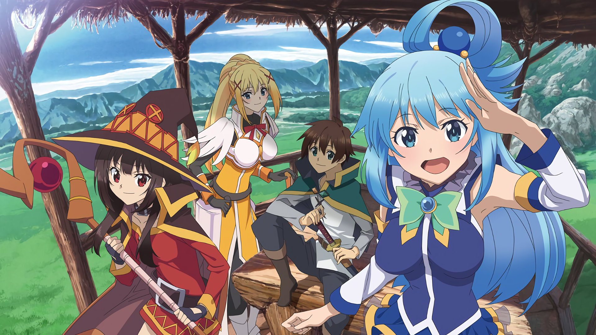
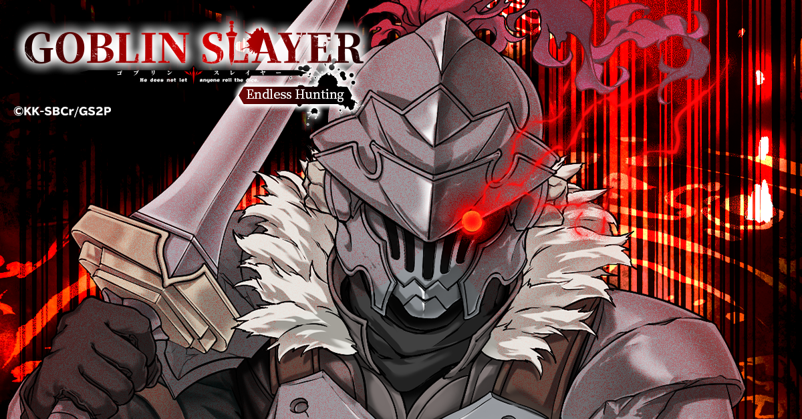
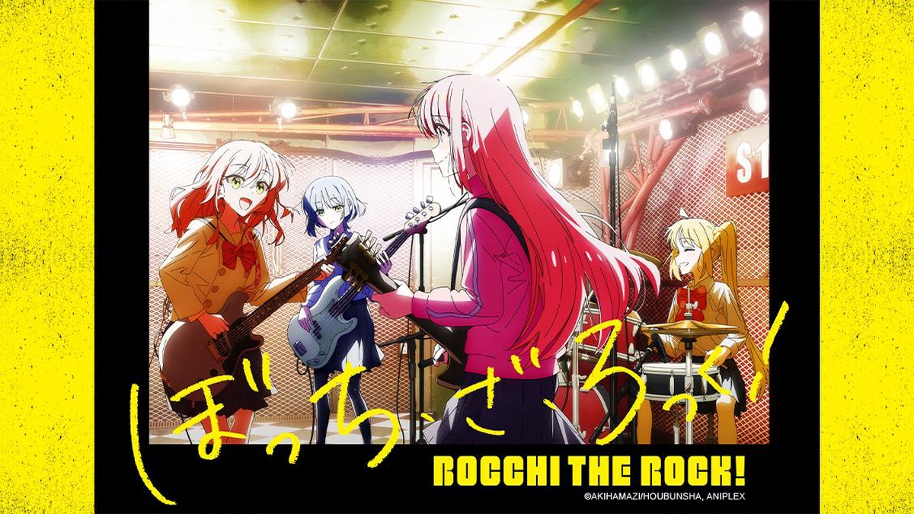

WELCOME TO MY WEBSITE
Christian Glenn O. Jimenez
18 Years Old
Born in March 26,2005
Lives in Mabilo, Kalibo, Aklan
Student @ Aklan State University
TOP 12 ANIME IN MY OPINION

1. Steins;Gate
Steins;Gate takes place in Akihabara in 2010.
It follows the story of the self-proclaimed mad scientist Rintaro Okabe,
who, alongside his friends Mayuri Shiina and Itaru Hashida, discovers that
they have accidentally created a machine capable of sending messages to the past.

2. Konosuba
KonoSuba, is a Japanese light novel series written by Natsume Akatsuki.
The series follows Kazuma Satou, a boy who is sent to a fantasy world with
MMORPG elements following his death, where he forms a dysfunctional
adventuring party with a goddess, an archwizard, and a crusader.

3. Horimiya
Horimiya revolves around the endearing duo, Kyouko Hori and Izumi Miyamura.
Hori, the popular and seemingly perfect student, and Miyamura, the introverted and
nerdy outcast, discover each other's true selves and fall madly in love.

4. That Time I Got Reincarnated As A Slime
The story follows Satoru Mikami, a salaryman who is murdered and then
reincarnated in a sword and sorcery world as a titular slime,
who goes on to gather allies to build his own nation of monsters.

5. Goblin Slayer
In a fantasy world, a lone hero makes his living by exterminating all goblins
he encounters. But one day he meets a friend, and his life begins to become more intense.
A young priestess has formed her first adventuring party, but almost immediately
they find themselves in distress.
6. Teasing Master Takagi-San
This show is about a middle school romance between Nishikata
and Takagi . Takagi has a crush on Nishikata and constantly teases him
by pulling innocent pranks.
7. Grand Blue Dreaming
Iori Kitahara looks forward to his new life on the Izu Peninsula as he prepares
to start his college life there, staying in a room above his uncle's diving shop "Grand Blue."
However, he is quickly shocked as he meets the local Diving Club, a group full of buff men
who spend more time drinking, partying, and stripping ...

8. Kaguya-Sama Love Is War
The proudly privileged top two students of an elite school each makes it their mission
to be the first to extract a confession of love from the other. Shuchiin Academy is home to students
from Japan's most successful and wealthy families, as well the nation's most brilliant young scholars.
9. I Want To Eat Your Pancreas
An aloof boy comes across a book in a hospital waiting room.
He soon discovers that it is a diary kept by his very popular classmate who
reveals to him that she is secretly suffering from a fatal pancreatic illness.

10. Bocchi The Rock
A shy, awkward, and lonely high school student dreams of being in a band despite
her doubts and worries, but when she is recruited to be the guitarist of a group looking to
make it big, she realizes her dream may be able to be fulfilled and come true.

11. Your Name
Two teenagers share a profound, magical connection upon discovering they are swapping bodies.
Things manage to become even more complicated when the boy and girl decide to meet in person.
12. A Silent Voice
A grade-school student with a hearing impairment is bullied and transfers to another school.
Years later, the former bully is tormented by his behaviour and sets out to make amends.